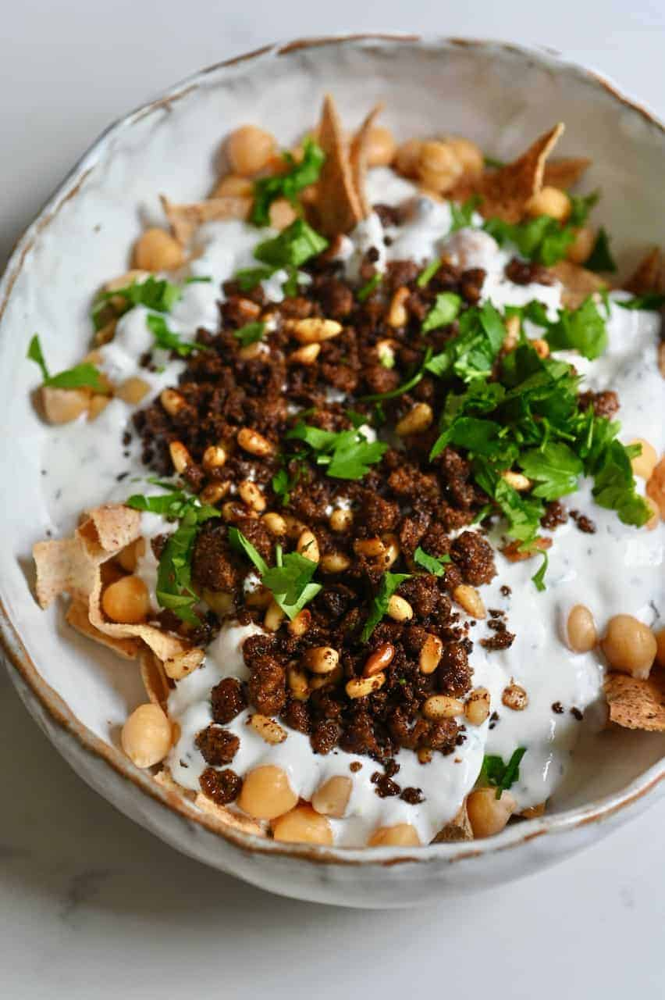

Fatteh Recipe

Description
Ingredients
- Yogurt
- Hummus
- Ground Beef
- Salt, Vinegar, Garlic, light olive oil
- Pines Nuts or Almonds
Steps:
- Add 1tspn of garlic, salt and vinegar to the yogurt.
- Add warm water and mix well until smooth and creamy.
- Boil the hummus and leave on low fire for 45 minutes to 1 hour until soft (note: the hummus should be soaked the night before).
- Add salt to the hummus and smash until only few whole beans are left and the rest is smashed.
- Fry the meat with some light olive oil and add salt and seven spices.
- Drain the hummus and add it to the yogurt mix.
- Add fried meat on top.
- Fry the pine nuts or almonds and add on top of the meat.
- Serve in a bowl and add pita chips on top.
Bon Appetit!